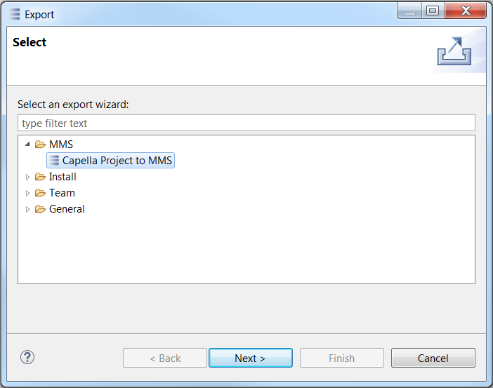
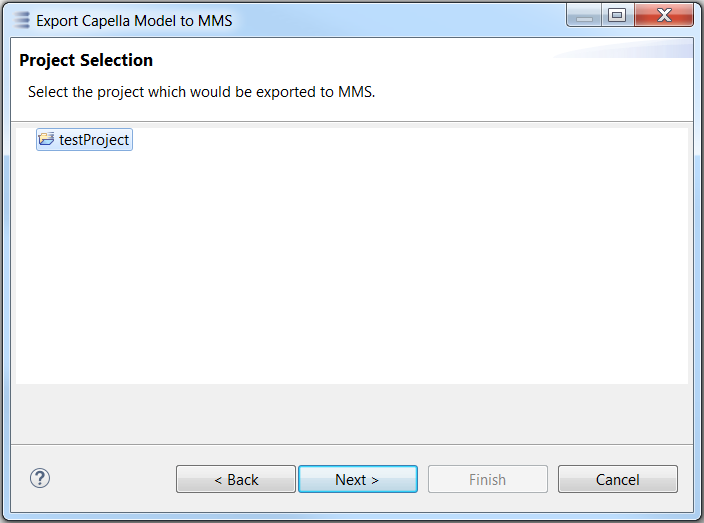
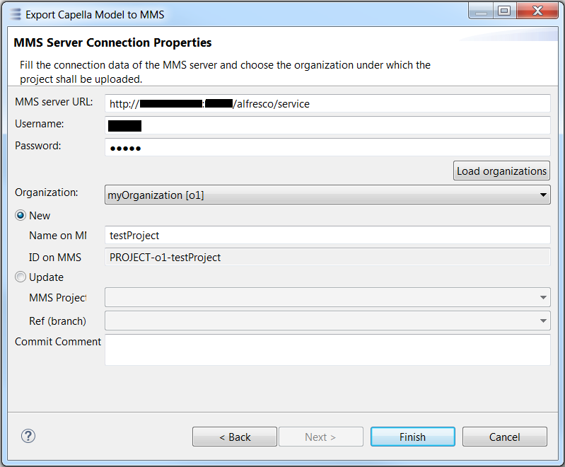

Export wizard
The export wizard is accessible through the main menu File / Export...
Then, within the proposed list, select the item MMS / Capella Project to MMS

Then, within the proposed list, select the project that will be exported to MMS

Then, follow the sequence described below:
- Fill-in the MMS server URL and its related credentials
- Click on the button Load organizations, to validate the connection and load the organizations
- Then, select how the project will be exported :
- If New is selected, the project will be exported to a new MMS project with the given Name and a new generated ID
- If Update is selected, the project will be exported to the selected existing MMS Project and the selected existing Ref (branch)
- An optional commit message can be filled-in
- Then, click on the button Finish, to perform the export
